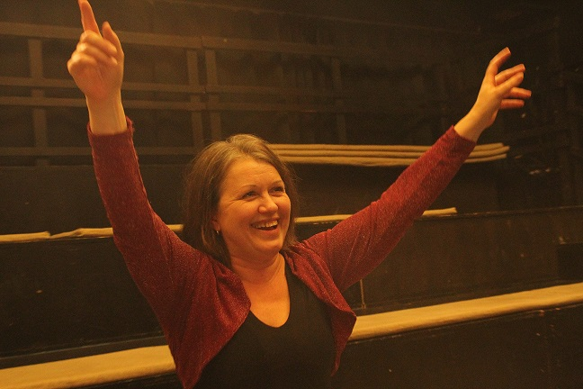

CHUBBUCKTEKNIKK MED TEMAET KRIM OG THRILLER - 2 dgr. FRIST 22/8
- Kategori:
- Kurs for viderekomne
Kurs for viderekomne
Åpent for profesjonelle skuespillere med lang erfaring. Se søknadsteksten for spesifikasjoner. - Dato:
- 23.09.2016 til 24.09.2016
- Start kl :
- 09:00
- Slutt kl :
- 17:00
- Pris:
- 850,-
- Adresse:
- Schous kulturstasjon, Trondheimsvn. 2 L, Oslo

{kind=link}
Den meget populære Chubbuck-pedagogen og skuespillercoachen Elisabet Sevholt er tilbake!
Søknadsfrist: 22. august
En workshop om Chubbuck-teknikken og det å jobbe med krim og thrillere
Krim og thrillere handler om liv og død. De går direkte til våre grunnleggende menneskelige behov, og som skuespiller må vi blottlegge våre dypeste drivkrefter - makt, kjærlighet, sex, penger, menneskelig verdighet - for å unngå å spille en sort/hvitt karakter i disse fortellingene.
Vi øremerker to veldig intensive dager til scener fra krim og thrillere, og Chubbuck-teknikken. Vi undersøker hvorfor vi dreper, stjeler, bedrar, sårer og utnytter mennesker rundt oss. Vi jobber med metoder for å finne ekte redsel, hvordan vi oppfører oss i nærheten av døden, hvordan vi kjenner fysisk smerte, hvorfor vi utsetter mennesker omkring oss for lidelse – i likhet med hvordan vi blir forelsket, kjenner medmenneskelighet og opplever nære vennskap og familebånd – ja, alt det som gjør oss til mennesker.
Om Chubbuck-teknikken
Chubbuck-teknikken skaper et moderne skuespilleruttrykk som bygger på Stanislavskij. Teknikken passer utmerket for film- og TV-skuespill, og gir effektive verktøy for å få dybde og kompleksitet i karakteren.
Workshopen går igjennom Chubbuck-teknikkens tolv steg i scenearbeidet. Dessuten arbeider vi med å skrive en emosjonell dagbok, å finne ekte redsel og sorg, effekten av å være påvirket av narkotiske stoffer, følelsen av å være forelsket i eller å ha familiebånd til sin motspiller og mye, mye mer.
Om du vil lese mer om teknikken kan du gjøre det her: www.ivanachubbuck.com
Workshopen holdes på svensk.
Deltakerkrav
3-årig utdanning på høyskolenivå og profesjonell erfaring som skuespiller. Vi oppfordrer søkere med 5 års profesjonell arbeidserfaring eller mer til å søke.
Søkere må søke med oppdatert CV og showreel/foto.
Påmelding gjøres her: http://www.skuespillersenter.no/pamelding/
OBS: Ingen observatørplasser denne gangen.
Forberedelser:
Senest to uker innen kursstart kommer du til å tildeles en scene fra en film eller et stykke, og en scenepartner. Les Ivana Chubbuck’s bok ”The Power of the Actor” (finnes bl.a. på Amazon) og anvend deg av de tolv stegene som beskrives der i din forberedelse. Regn med å repetere minst 2 ganger sammen med din scenepartner før workshopen.
Elisabet Sevholt er en svensk skuespillercoach og benytter seg av Chubbuck-teknikken. Hun holder workshops og kurs over hele Skandinavia og Nord-Europa, og coacher mange skandinaviske og europeiske skuespillere for film, internasjonale og skandinaviske TV-serier og teater. Hun har også regissert over 25 teaterproduksjoner, og vært lærer på et antall teaterskoler bl.a. Teaterhögskolan i Stockholm, Oxford School of Drama, Lee Strasberg Theatre Institute og Actors Centre i London. Hun jobber også som regi-coach for unge filmregissører.
{kind=link}
I 2008 ble Elisabet sertifisert lærer i Chubbuck-teknikken av Ivana Chubbuck i Los Angeles. Hun har siden jobbet med å utvikle teknikken for skandinaviske og europeiske skuespillere, og skriver for tiden på en bok om temaet.
Mer informasjon om Elisabet Sevholt finnes på www.elisabetsevholt.com
Pris for NSF-medlemmer: 800,-
I samarbeid med: